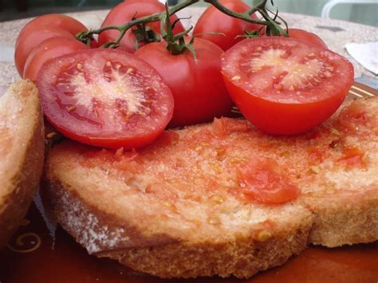
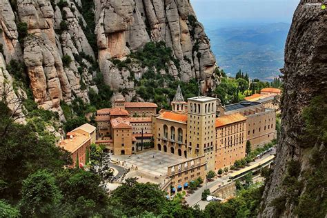
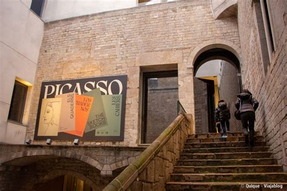
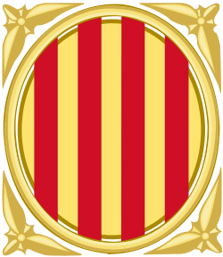

Cataluña
Descripción
Cataluña está en el noreste de España. Es conocida por su cultura única, idioma catalán y la ciudad de Barcelona. Tiene playas bonitas, montañas, y muchos museos y arquitectura famosa.
Datos Rápidos
- Capital: Barcelona
- Idioma Regional: Catalán, Español
- Población: ~7.7 millones
- Famosa por: Gaudí, fútbol, playas, comida mediterránea
- Dato Curioso: ¡El templo de la Sagrada Familia aún no está terminado!
Platos Populares
Pa amb tomàquet

Escalivada

Butifarra amb mongetes

Crema catalana

Lugares Famosos
Sagrada Familia

Parque Güell

Casa Batlló

Montserrat

Museo Picasso

Mejor época para visitar
La mejor época para visitar Cataluña es en primavera (abril–junio) o otoño (septiembre–octubre) por el buen clima y menos turistas.
Símbolos Regionales
- Bandera:
- Escudo: 